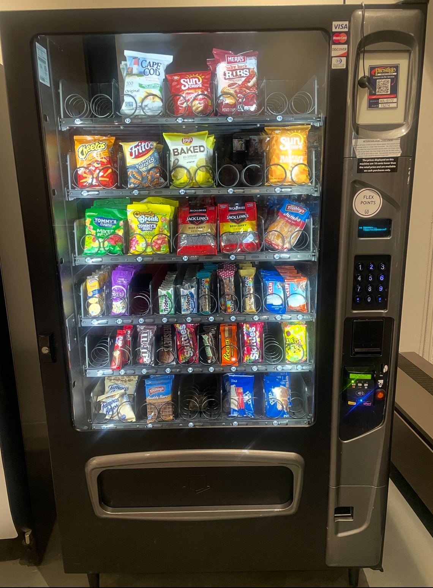
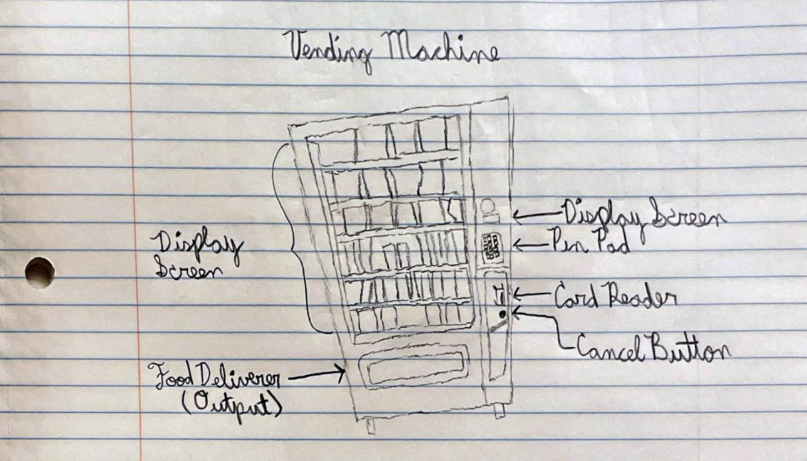
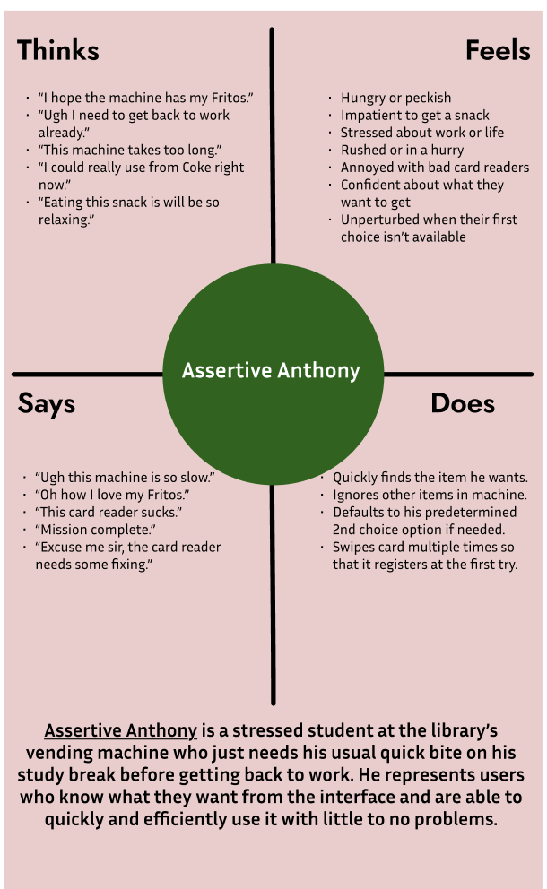
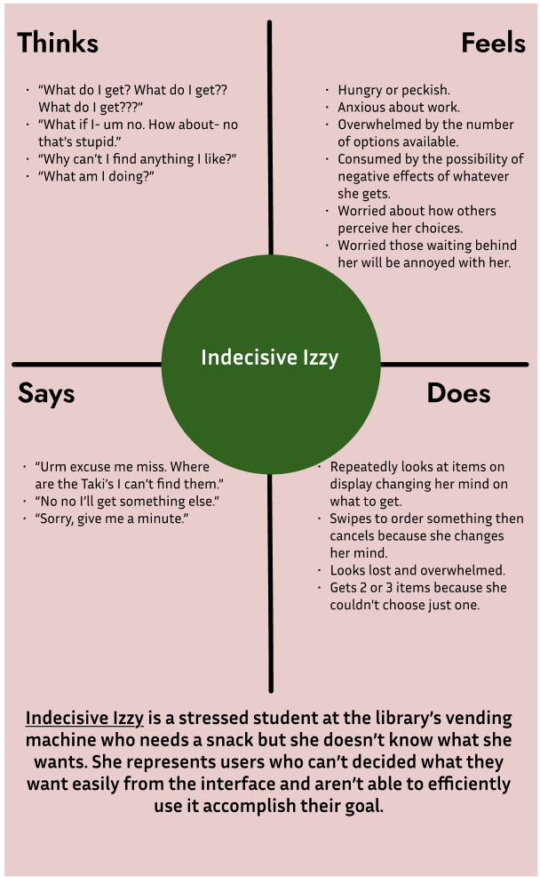

Personas and Storyboarding: Vending Machines
I've decided to make the vending machine the focal point for my analysis
of public interfaces that require “persona” consideration.
Why Vending Machines?
Vending Machine (Primer)

Vending Machine (Sketch)

The vending machine interface serves the role of allowing
individuals to access their options of convenient food or drink
items and allowing them to pay via cash or card to acquire the
available item of their choosing. There is a glass wall that allows
you to see all available options and their ID number, a pin pad to
allow the user to enter the ID for any item shown, an analog screen
that shows how much an entered ID's item costs, a card reader acting
as a payment method for the item chosen, and a red cancel button to
cancel the purchase and avoid getting your card charged. This makes
the vending machine a great interface to analyze as a public interface
and allows us to build a basis for possible personas of users of
this interface quite easily.
Interviews!
I conducted 3 short interviews with active vending machines users!
Here are the questions asked!
- What made you decide to use the vending machine today? Were there other
options you considered? (Open-ended)
- What goal did you have in mind when using this machine? (Open-ended)
- Before approaching the vending machine, how certain were you about what
item you wanted? (Very certain, slightly
certain, neutral, slightly
uncertain, very uncertain)
- Please tell me about how you went about deciding which item you wanted
from the machine. (Open-ended)
- On a scale from 1-5, how easy or difficult was it to use the vending
machine? (1 is very easy and 5 is very hard)
- Did you experience any difficulties when using the vending machine?
(Yes or no) If so, what were they? (Open-ended)
Person #1
Here are some observations I made:
- Person 1 walked up to the vending machine, immediately swipe their
card, entered an id, and took their item to go.
Here are Person #1's the responses to the interview questions:
- This person was on a study break and wanted a sweet treat before going
back to work. Going to a dining hall from the John D. Rockefeller, Jr.
Library (the Rock) would have taken too much time and they didn't want
a full meal, just a snack.
- The goal was to get Sour Patch Watermelon gummies as they usually do
and eat them while watching a YouTube video.
- Slightly certain.
- This person usually gets Sour Patch Gummies from the Rock so there
wasn't much of an internal debate. Most likely a habit they have.
- Two.
- Yes. Sometimes the card reader doesn't work right on the first swipe
so they tend to start off with a double swipe motion but not much else
is problematic.
Person #2
Here are some observations I made:
-
Person 2 walked up to the vending machine and stared at all the items
for about a minute.
-
Their eyes darted from one item to the next and back to the same few items.
-
After, they swiped their card and entered for an item. They then
entered an ID for another item and took both from the food cubby.
Here are Person #2's the responses to the interview questions:
-
This person had a craving but for nothing specific. The dining halls
were another option, but it was too cold and too much effort to walk
there.
-
They wanted to snack on something to satisfy their craving.
-
Slightly uncertain.
-
They were unsure about what to get since they couldn’t find the cookies
that they liked, so they went back and forth between the Big KitKat and
another brand of cookies. After a while, they decided to just get both.
-
Two.
-
Yes. The machine itself is fine, but they tend to be indecisive.
Person #3
Here are some observations I made:
-
Like Person 1, Person 3 walked up to the vending machine, immediately
swipe their card, entered an ID, and took their item to go.
-
This person was a man of little words and did not seem like they wanted
to be interviewed to be honest.
Here are Person #3's the responses to the interview questions:
- They wanted potato chips.
- No.
- To get potato chips.
- Very certain.
- They already knew what type of chips the machine had and what they
wanted to get.
- One. No.
Persona Analysis Time!
Based off of the 3 people I interviewed I made two personas to represent
the archetypes of people who use vending machines.
Assertive Anthony

Indecisive Izzy

Storyboard for Assertive Anthony
I decided to make a storyboard to illistrate the series of events a user
like Assertive Anthony may go through when using the vending machine interface.